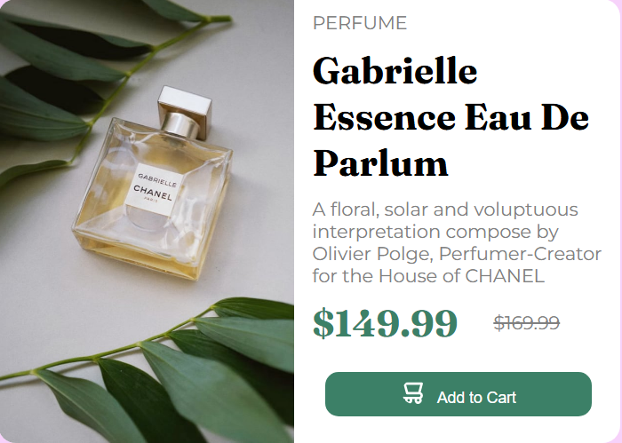
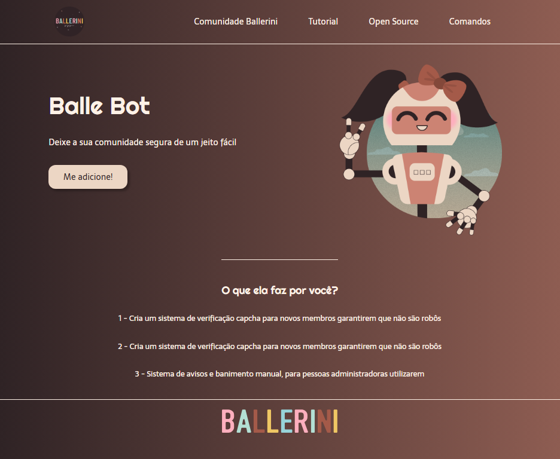
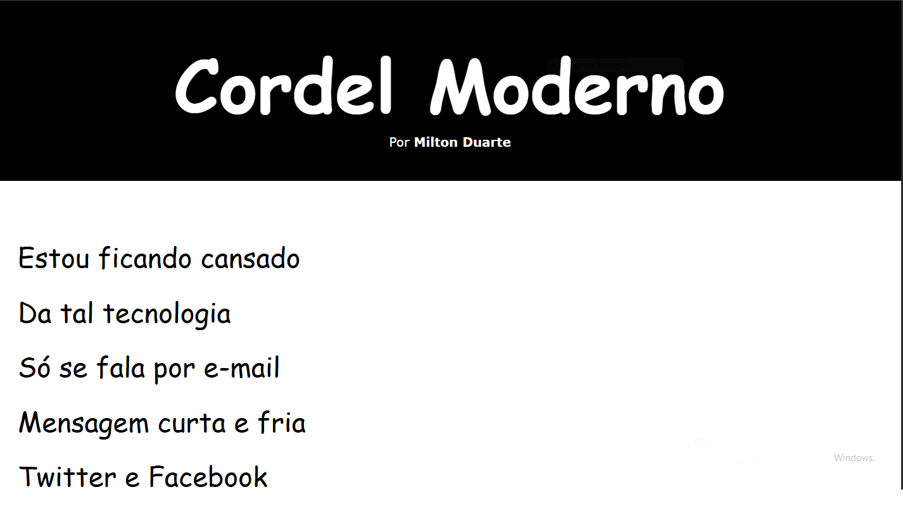
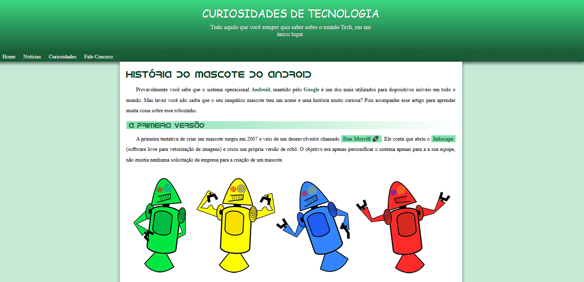

Meu Portifólio

Projeto foi desenvolvido utilizando HTML e CSS, com foco em responsividade e design moderno.
O projeto foi criado a partir de um desafio do site Frontend Mentor.
Acesse a página do projeto clicando Aqui

Projeto foi desenvolvido utilizando HTML e CSS, com foco em elementos de css e design moderno.
O projeto foi criado a partir de um desafio no canal da Rafaela Ballerini.
Acesse a página do projeto clicando Aqui

Projeto foi desenvolvido utilizando HTML e CSS, com foco em imagens de background.
O projeto foi criado a partir de um desafio na plataforma Curso em Video.
Acesse a página do projeto clicando Aqui

Projeto foi desenvolvido utilizando HTML e CSS, com foco em responsividade.
O projeto foi criado a partir de um desafio da plataforma do Curso em Video.
Acesse a página clicando Aqui